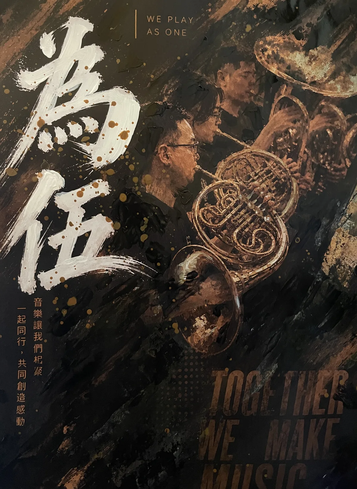

402025
《四方之音》
指揮：簡晟軒主辦字頭：四字頭
《四方之音》呼應校友來自四面八方、齊聚一堂共襄盛舉。第 40 屆由四字頭校友承接籌辦，簡晟軒擔任指揮，總召陳乃慎統籌演出行政；目前曲目、團員名單與更完整的節目冊資料仍待補齊。若校友保存海報、節目單、照片或錄音，歡迎協助補充，讓第 40 屆的紀錄更完整。後續整理會盡量回到節目冊、照片、錄影與校友口述之間互相校對，讓列表摘要先保留可閱讀的輪廓，也讓獨立頁面持續累積更完整的演出脈絡。

SINCE 1985
自 1985 年起，每年暑假邀集在校生與歷屆校友共同排練、共同登台。這場音樂會的意義遠超過一場演出——它是不同世代透過音樂重新相聚的時刻，也是校友們每年回到共同青春記憶的儀式。

第 41 屆．2026
「為伍」取「做伙伴、在一起」之意，呼應校友與在校生因音樂再度同行、成為彼此伙伴的精神。本屆由輪值的「五字頭」主辦，串起民國 75、85、95、105 年入學校友的跨世代相聚。
睽違多年重返嘉義市政府文化局音樂廳舞台，並由校友黃鈺芠（編號 1051）擔任小號協奏，演出 Philip Sparke《Manhattan》。
經典管樂、七夕與歌謠、跨界改編三條脈絡並行，包含《Seagate Overture》、《Flashing Winds》、《The Seventh Night of July》、Grainger 民謠作品、瑪利歐銀河交響組曲與 City Pop 改編組曲等。
籌備中，實際節目以正式公告為準。
嘉中管樂隊歷史悠久，校友聯演多年來延續每年相聚的傳統，讓不同世代在同一座舞台上再次相遇。本場音樂會將以多元管樂作品串起青春、傳承與團隊默契，邀請觀眾一同感受屬於嘉義的管樂能量。
團練、售票與活動更新會集中在這裡；完整消息列表可至最新消息總覽查看。
歷屆聯演的資料來源橫跨海報、節目冊、照片與校友口述；有些屆別已能完整查考，有些仍等待補齊。新版面把每一屆整理成同一套典藏列表，讓不同年份的海報風格被穩定收束，也讓手機閱讀可以先抓到屆數、年份、主題、場地，再慢慢看細節。
指揮：簡晟軒主辦字頭：四字頭
《四方之音》呼應校友來自四面八方、齊聚一堂共襄盛舉。第 40 屆由四字頭校友承接籌辦，簡晟軒擔任指揮，總召陳乃慎統籌演出行政；目前曲目、團員名單與更完整的節目冊資料仍待補齊。若校友保存海報、節目單、照片或錄音，歡迎協助補充，讓第 40 屆的紀錄更完整。後續整理會盡量回到節目冊、照片、錄影與校友口述之間互相校對，讓列表摘要先保留可閱讀的輪廓，也讓獨立頁面持續累積更完整的演出脈絡。
指揮：曾膺安、盧宓承、簡晟軒獨奏／協奏：鄭鈞元（薩克斯風）票務：百年校慶活動主辦字頭：三字頭
《三生有幸》結合嘉義高中建校百年慶典，在陪伴無數嘉中人的校園中庭雨豆樹下舉辦。前副總統蕭萬長等貴賓與 180 餘位嘉中人共襄盛舉，曾膺安、盧宓承、簡晟軒三位校友跨世代同台執棒，並由鄭鈞元擔任薩克斯風協奏。曲目以《旭陵慶典》開場，連結百年校慶與校友聯演傳統。仍待補齊時間、團員名單等資料；若校友保存節目冊、海報、照片或錄音，歡迎協助補充。後續整理會盡量回到節目冊、照片、錄影與校友口述之間互相校對，讓列表摘要先保留可閱讀的輪廓，也讓獨立頁面持續累積更完整的演出脈絡。

《一樹起響》呼應嘉中校園老樹意象，象徵眾人齊聚一堂、共同奏響樂章；副標 Saeculum illuminate 也為隔年的百年校慶揭開序幕。本屆由翁啟榮籌備統籌，盧宓承、丁肇賢、簡晟軒共同擔任指揮，並首演葉哲良為建校百年創作的《旭陵慶典》，把校歌旋律與「質實剛健」精神帶回聯演舞台。目前已整理的曲目包含旭陵慶典，完整順序仍依節目冊持續校對。後續整理會盡量回到節目冊、照片、錄影與校友口述之間互相校對，讓列表摘要先保留可閱讀的輪廓，也讓獨立頁面持續累積更完整的演出脈絡。
指揮：盧宓承、簡晟軒獨奏／協奏：陳錫仁（小號）、洪筱涵（法國號）票務：免票入場主辦字頭：八字頭
《正八音》由八字頭校友籌辦，8 月 31 日先於嘉義高中樹人堂演出，9 月 1 日移師北港文化中心家湖廳，睽違十五年再次巡迴北港。盧宓承、簡晟軒分別擔任兩場指揮，陳錫仁與洪筱涵擔任協奏獨奏，兩場合計約 550 名觀眾，動員 76 人、共 129 人次參與。目前已整理的曲目包含Slava!、Dynamica、Arutiunian Trumpet Concerto、Bolero、Riverdance 等，完整順序仍依節目冊持續校對。仍待補齊時間等資料；若校友保存節目冊、海報、照片或錄音，歡迎協助補充。

《青春の極短篇》以「捌月季」與「當我的七仔好嗎？」為宣傳語，由曾膺安、簡晟軒擔任指揮，2018 年 8 月 5 日於嘉義市文化局音樂廳演出。曲目包含八木澤教司《稚鳥飛翔》、酒井格《七夕》、《豪勇七蛟龍》、007 組曲與岩井直溥編曲《美國風情畫》等；團員名單仍待補齊。後續整理會盡量回到節目冊、照片、錄影與校友口述之間互相校對，讓列表摘要先保留可閱讀的輪廓，也讓獨立頁面持續累積更完整的演出脈絡。

《六馬仰秣 憶當年》取成語形容樂音美妙之意，主視覺以薩克斯風與昂首的馬匹相融。羅家駒、盧宓承、簡晟軒、王騰寬共同執棒，曲目包含《Lyrical March》、《AIDA》選粹、《Songs of Sailor and Sea》、《Sedona》、《Beauty and the Beast》等；部分曲目仍待節目冊佐證。仍待補齊團員名單等資料；若校友保存節目冊、海報、照片或錄音，歡迎協助補充。後續整理會盡量回到節目冊、照片、錄影與校友口述之間互相校對，讓列表摘要先保留可閱讀的輪廓，也讓獨立頁面持續累積更完整的演出脈絡。
《五字頭！》由五字頭校友承接主辦，2016 年 8 月 27 日於嘉義市文化公園演奏台演出。現存 DM 已能確認主題、屆次、日期、時間、場地與指揮名單，陳錫仁、翁啟榮、丁肇賢共同執棒；曲目包含《The Days of Wine and Roses》、重奏曲目、松田聖子歌曲選粹、《On the Mall》與《新天堂樂園》等。仍待補齊團員名單等資料；若校友保存節目冊、海報、照片或錄音，歡迎協助補充。後續整理會盡量回到節目冊、照片、錄影與校友口述之間互相校對，讓列表摘要先保留可閱讀的輪廓，也讓獨立頁面持續累積更完整的演出脈絡。
指揮：鄭鈞元、簡晟軒、陳錫仁、盧宓承獨奏／協奏：陳韋希（薩克斯風）票務：100 元
《三生。一世樂》於 2015 年 9 月 5 日在嘉義市政府文化局音樂廳演出，由鄭鈞元、簡晟軒、陳錫仁、盧宓承共同執棒，陳韋希擔任薩克斯風協奏。本屆是聯合音樂會三十年來首度嘗試售票演出，透過兩廳院售票系統與 ibon 售票；節目涵蓋管樂經典、協奏曲與岩井直溥通俗名曲。目前已整理的曲目包含1812 序曲、兩個樂章（薩克管協奏曲）、林肯郡花束、非洲交響曲、八木節 等，完整順序仍依節目冊持續校對。後續整理會盡量回到節目冊、照片、錄影與校友口述之間互相校對，讓列表摘要先保留可閱讀的輪廓，也讓獨立頁面持續累積更完整的演出脈絡。

指揮：資料待考
《三十而樂》紀念校友聯演傳統邁入第三十屆，副標「卅有其誓 × 出磊拔粹」延伸出屆次與青春記憶的雙關。現階段已保留主題與年度線索，但日期、場地、指揮、曲目與團員名單仍待補齊；若校友保存節目冊、海報、照片或錄音，歡迎協助補充。後續整理會盡量回到節目冊、照片、錄影與校友口述之間互相校對，讓列表摘要先保留可閱讀的輪廓，也讓獨立頁面持續累積更完整的演出脈絡。

指揮：鄭鈞元、陳錫仁、簡晟軒、蔡淳任獨奏／協奏：陳錫仁（小號）票務：免費索票入場
第 29 屆聯合音樂會於 2013 年 8 月 23 日在嘉義市政府文化局音樂廳演出，由鄭鈞元擔任指揮，陳錫仁同時擔任客席指揮與小號獨奏，簡晟軒、蔡淳任擔任助理指揮，全團約 80 人。上半場包含管樂經典與協奏曲，下半場轉向音樂劇、電影配樂與爵士流行作品。目前已整理的曲目包含春之獵犬、小號協奏曲，降 E 大調、英國民謠組曲，第三樂章：薩默塞特民歌、曼佐尼安魂曲選粹、悲慘世界 等，完整順序仍依節目冊持續校對。後續整理會盡量回到節目冊、照片、錄影與校友口述之間互相校對，讓列表摘要先保留可閱讀的輪廓，也讓獨立頁面持續累積更完整的演出脈絡。

《追憶-榮耀》於 2012 年 8 月 31 日在嘉義市文化局音樂廳演出，由鄭鈞元、丁肇賢擔任指揮，李子沛擔任長笛獨奏。現存海報顯示本屆由嘉義市文化局主辦、國立嘉義高中協辦，並獲行政院青年輔導委員會與教育部指導，是目前海報可考最早的音樂廳演出紀錄之一。仍待補齊曲目、團員名單等資料；若校友保存節目冊、海報、照片或錄音，歡迎協助補充。後續整理會盡量回到節目冊、照片、錄影與校友口述之間互相校對，讓列表摘要先保留可閱讀的輪廓，也讓獨立頁面持續累積更完整的演出脈絡。

指揮：資料待考
第 27 屆聯合音樂會目前已能確認約於 2011 年舉行，日期線索暫列 7 月 16 日；場地、指揮、主題、曲目與團員名單仍待節目冊或海報補齊。同年另有世界管樂年會相關的校友演出紀錄，現階段先作為同年脈絡保存，不直接併入本屆。歡迎校友提供更多資料協助考證。後續整理會盡量回到節目冊、照片、錄影與校友口述之間互相校對，讓列表摘要先保留可閱讀的輪廓，也讓獨立頁面持續累積更完整的演出脈絡。
指揮：資料待考獨奏／協奏：方崇任（長號）
《Music à la Carte》於 2010 年 8 月 21 日晚間演出，現存照片顯示舞台布條寫有「第二十六屆國立嘉義高中校友暨在校生聯合演奏會」。目前可考協奏線索為方崇任演出 Launy Grøndahl 長號協奏曲；指揮、完整曲目與正式場地名稱仍待節目冊或海報補齊。仍待補齊指揮、曲目等資料；若校友保存節目冊、海報、照片或錄音，歡迎協助補充。後續整理會盡量回到節目冊、照片、錄影與校友口述之間互相校對，讓列表摘要先保留可閱讀的輪廓，也讓獨立頁面持續累積更完整的演出脈絡。
指揮：資料待考獨奏／協奏：王聖安（雙鋼琴）、陳佩君（雙鋼琴）
第 25 屆聯合音樂會於 2009 年 8 月 23 日在嘉義市音樂廳演出。目前可考協奏線索包含王聖安、陳佩君擔任雙鋼琴協奏，曲目為 Francis Poulenc《雙鋼琴協奏曲》。指揮、演出時間、完整曲目與團員名單仍待補齊；若校友保存節目冊、海報、照片或錄音，歡迎協助補充。後續整理會盡量回到節目冊、照片、錄影與校友口述之間互相校對，讓列表摘要先保留可閱讀的輪廓，也讓獨立頁面持續累積更完整的演出脈絡。
第 23 屆聯合音樂會於 2007 年 8 月 18 日在嘉義市政府文化局音樂廳演出，由丁肇賢與林唐禾共同擔任指揮，並邀請當時就讀法國梅斯音樂院的鄭鈞元返台擔任薩克斯風獨奏。曲目包含《鄉村騎士間奏曲》、《亞美尼亞舞曲》、《Lord Tullamore》與電影配樂等，是創隊 76 周年的重要紀錄。仍待補齊團員名單等資料；若校友保存節目冊、海報、照片或錄音，歡迎協助補充。後續整理會盡量回到節目冊、照片、錄影與校友口述之間互相校對，讓列表摘要先保留可閱讀的輪廓，也讓獨立頁面持續累積更完整的演出脈絡。
指揮：資料待考獨奏／協奏：簡晟軒（長號）
第 22 屆聯合音樂會目前可考場地為嘉義市音樂廳，協奏線索包含簡晟軒演出 Launy Grøndahl 長號協奏曲。日期、時間、指揮、完整曲目與團員名單仍待節目冊、海報或校友口述補齊；網站先保留已知資訊，歡迎校友提供更多資料協助考證。後續整理會盡量回到節目冊、照片、錄影與校友口述之間互相校對，讓列表摘要先保留可閱讀的輪廓，也讓獨立頁面持續累積更完整的演出脈絡。
指揮：資料待考
《神話》目前保存了演出前後台、正式演出與謝幕照片，留下第 21 屆聯演的珍貴影像線索。日期暫列 2005 年 8 月 28 日，場地、指揮、曲目與團員名單仍待補齊；若校友保存節目冊、海報、錄音或當年活動紀錄，歡迎協助補充。後續整理會盡量回到節目冊、照片、錄影與校友口述之間互相校對，讓列表摘要先保留可閱讀的輪廓，也讓獨立頁面持續累積更完整的演出脈絡。
指揮：資料待考
第 18 屆聯合音樂會於 2002 年 8 月 30 日在嘉義市音樂廳演出，是目前影像保存最完整的早期屆別之一。照片記錄 8 月 24 日起的校內團練、進音樂廳彩排與晚間正式登台，檔名留下的「Blue Midnight」也是曲目線索；主題名稱、指揮與完整節目單仍待補齊。後續整理會盡量回到節目冊、照片、錄影與校友口述之間互相校對，讓列表摘要先保留可閱讀的輪廓，也讓獨立頁面持續累積更完整的演出脈絡。
《情誼永固》於 1998 年 8 月 29 日在嘉義市立文化中心音樂廳演出，節目冊封面與曲目頁保存度高，是早期聯演較完整的紀錄之一。羅家駒、陳錫仁擔任指揮，陳錫仁同時演出 Hummel 降 E 大調小號協奏曲；曲目另包含《Viva! Italia!》、《Symphonic Portrait》等作品。仍待補齊團員名單等資料；若校友保存節目冊、海報、照片或錄音，歡迎協助補充。後續整理會盡量回到節目冊、照片、錄影與校友口述之間互相校對，讓列表摘要先保留可閱讀的輪廓，也讓獨立頁面持續累積更完整的演出脈絡。
指揮：資料待考
《Popular Night》海報寫作「七九年校友聯合演奏會」，日期 8 月 23 日星期四與 1990 年相符，場地為嘉中樹人堂。屆次依 1985 年第 1 屆推算為第 6 屆，正式屆次文字、指揮、曲目與團員名單仍待佐證；若校友保存節目冊、照片或錄音，歡迎協助補充。後續整理會盡量回到節目冊、照片、錄影與校友口述之間互相校對，讓列表摘要先保留可閱讀的輪廓，也讓獨立頁面持續累積更完整的演出脈絡。
指揮：資料待考
校友暨在校生聯合音樂會傳統自 1985 年開始，讓畢業校友每年暑假回到嘉中，與在校生共同排練、共同登台。第 1 屆的日期、場地、指揮、曲目與團員名單目前仍待考證；網站先保留傳統起點，期待校友提供節目單、海報、照片或口述記憶，一起補齊這段歷史。後續整理會盡量回到節目冊、照片、錄影與校友口述之間互相校對，讓列表摘要先保留可閱讀的輪廓，也讓獨立頁面持續累積更完整的演出脈絡。
近年來，聯合音樂會最主要的舞台是嘉義高中校內的樹人堂。樹人堂位於校門進入後右側，現址原是校內的棒球場，後改建為大禮堂，是週會、開學典禮、畢業典禮與聖誕晚會、戲劇公演的重要場地。第 39 屆聯演因適逢百年校慶，特別選在校園中庭那棵陪伴無數嘉中人的雨豆樹下舉行。
而嘉義市政府文化局音樂廳對嘉中管樂人而言，其實是熟悉的老朋友。依現存海報、照片與公開報導可考，至少第 18 屆（2002）、第 23 屆（2007）、第 25 屆（2009）、第 28 屆（2012）、第 29 屆（2013）、第 31 屆（2015）、第 34 屆（2018）、第 36 屆（2020）都曾登上這座舞台——2002 年彩排照片的檔名裡，還留著當年團員寫下的「音樂廳很美吧！」。2015 年起聯演已透過兩廳院售票系統公開售票；其餘屆別的紀錄仍在蒐集整理中。2026 年第 41 屆《為伍》睽違六年重返音樂廳——延續逾四十年的校友傳統，再一次回到熟悉的舞台。